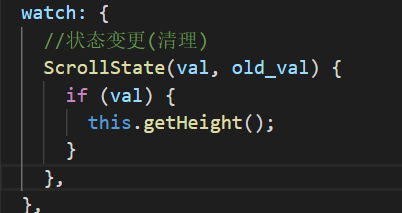
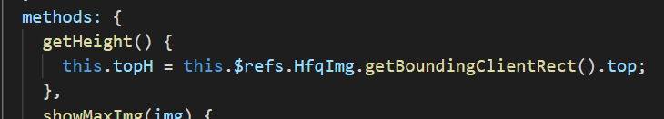
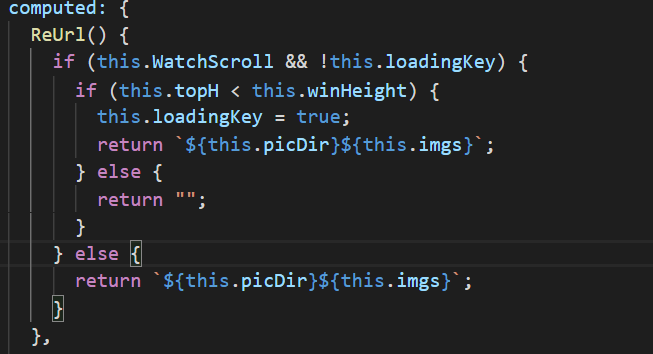
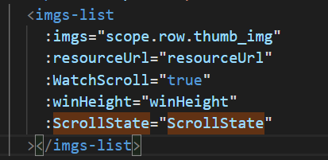
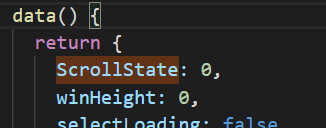
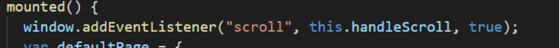
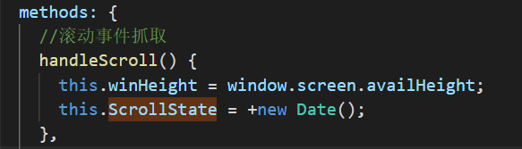

vue子组件实现懒加载功能
子组件扩展参数
| 参数 | 功能 | 参数示例 | 备注 |
|---|---|---|---|
|
WatchScroll |
是否需要懒加载 |
true/false
|
必需 |
|
winHeight |
窗口高度 |
window.screen.availHeight
|
必需 |
|
ScrollState |
滚动监听 |
+new Date()
|
必需 |
子组件加入逻辑
| 监视窗口运动,如果运动就获取子组件高度信息 |
ScrollState(val, old_val) { if (val) { this.getHeight(); } },
|
|  | |
| 记录子组件子组件当前高度 |
getHeight() { this.topH =
this.$refs.HfqImg.getBoundingClientRect().top; },
|
|  | |
| 图片路径为计算属性,如果子组件高于窗口,据更新img的路径 |
ReUrl() { if (this.WatchScroll && !this.loadingKey) {
if (this.topH < this.winHeight) { this.loadingKey = true;
return `${this.picDir}${this.imgs}`; } else { return
""; } } else { return
`${this.picDir}${this.imgs}`; } },
|
|  | |
需要父组件做处理
| 引入子组件 |
<hfq-img :imgs="scope.row.thumb_img"
:resourceUrl="resourceUrl"
:WatchScroll="true" :winHeight="winHeight"
:ScrollState="ScrollState" > </hfq-img>
|
|  | |
| 注册子组件需要参数 |
ScrollState: 0, winHeight: 0,
|
|  | |
| 引入事件监听 |
window.addEventListener("scroll", this.handleScroll, true);
|
|  | |
| 加入监控函数 |
handleScroll() { this.winHeight = window.screen.availHeight;
this.ScrollState = +new Date(); },
|
|  | |